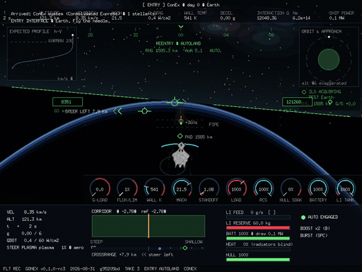
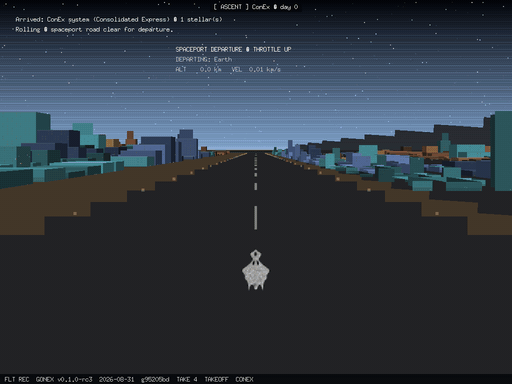
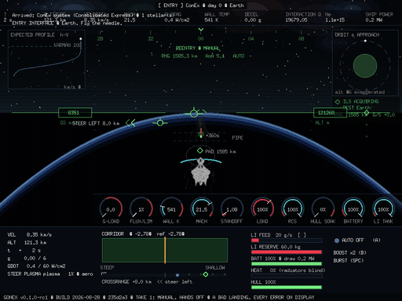
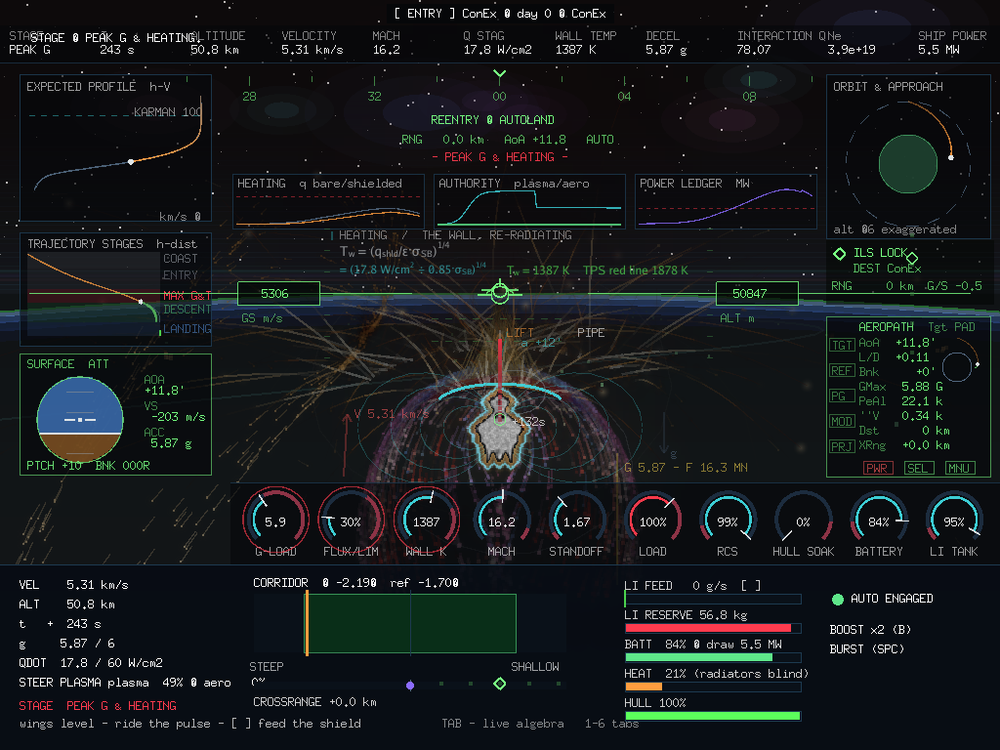
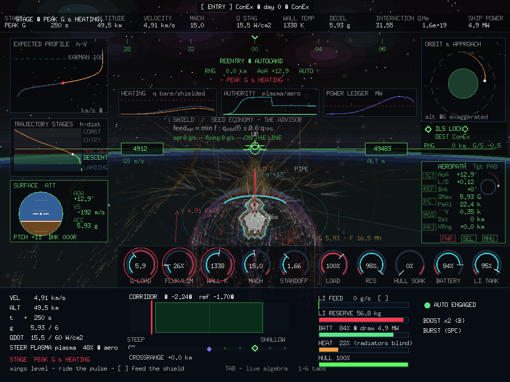

> THE SHIPS — CONEX 1.2, 1997
Ten hulls from Paul Richeson's ConEx 1.2 (dated 9 November 1997, released the evening of 28 November 1997). Each ships with 36 rotation frames (sprites 32–80 px) plus its target, shipyard, comm and thumbnail pictures. Pick one to fly it in the demo.
 Small Pin36 px sprite
Small Pin36 px sprite Medium Pin50 px sprite
Medium Pin50 px sprite Large Pin65 px sprite
Large Pin65 px sprite Dart80 px sprite
Dart80 px sprite Defender36 px sprite
Defender36 px sprite Gryphon32 px sprite
Gryphon32 px sprite Trident35 px sprite
Trident35 px sprite Necromancer50 px sprite
Necromancer50 px sprite Yodacon70 px sprite
Yodacon70 px sprite Tomaquad60 px sprite
Tomaquad60 px sprite

Two editions
ConEx 1.2 (1997) — the Escape Velocity plugin: the ten hulls above.
ConEx Override 1.0 (1998) — Paul Richeson's rebuild for Escape Velocity Override: eleven ship records — the Callisto and a “1/4 Defender” are new, the Medium Pin is gone — with larger sprites (40–104 px) and sixteen landing pictures (thirteen distinct) rendered in Bryce. It is in the pack as its own edition.
The contact sheet shows the 1997 hulls: frame, target, yard, comm and thumb per ship.
> USE IT ANYWHERE
The pictures are plain PNGs — sprite sheets, single frames and the 1997 pictures — so they drop into anything. Working examples:
- DOM / CSSsprite sheet as a background
- Canvas 2DdrawImage, frame by frame
- three.jsa hull in a 3D scene
- Phasera spritesheet you can fly
- PixiJSanimated sprite
- <yodacon-ship>one tag, no build step
<script type="module"
src="https://yodacon.org/ship-pack/lib/yodacon-ship-pack.js"></script>
<yodacon-ship ship="yodacon" spin></yodacon-ship>Swap ship="yodacon" for any slug: small-pin, medium-pin, large-pin, dart,
defender, gryphon, trident, necromancer, yodacon, tomaquad.
> THE LICENCE, IN PLAIN WORDS
- Free to use, modify and sell in your project.
- Credit “Paul Richeson (ConEx)” and the Yodacon Ship Pack.
- If you distribute the art, distribute it under GPL-2.0-or-later with the licence text.
- A game that builds the art into itself should itself be GPL-compatible.
The simplest safe routes: license your project under the GPL, or keep the pack as a
separate, unmodified vendored folder with its LICENSE beside it.
Not legal advice. When in doubt, read the GPL FAQ or the pack's LICENSE.
Ships from the Yodacon Ship Pack by Paul Richeson (ConEx, 1997), GPL-2.0-or-later — https://github.com/yodacon/yodacon-ship-pack> LINEAGE — WHERE THESE SHIPS FIRST FLEW
The oldest date in any ConEx file: the plugin was created on Sunday 9 November 1997 and released on the
evening of the 28th. Its home page, geocities.com/SiliconValley/Way/9298, is lost.
The full timeline.
-
1997
ConEx — Paul Richeson
An Escape Velocity plugin: 538 resources in a Mac resource fork, no code. Designed, rendered and published all ten hulls for the Consolidated Express government. The original archive.
-
1998
ConEx Override — Paul Richeson
Started over for Escape Velocity Override: larger sprites (40–104 px), adds the Callisto and drops the Medium Pin, new landing pictures rendered in Bryce. The original archive.
-
2005
konex — Joshua Bussdieker
A standalone C++/OpenGL remake. Its cast is ConEx Override's ten hulls — sprites carried over from the 1998 plugin, some rescaled to power-of-two textures — plus two of its own, Advisor and Citrus. Kept ConEx's splash screen; only deathmatch and “Sunday Drive”. yodacon/konex ↗
-
2026
Gonex — Team Yodacon
The Go/Ebitengine port of konex that restores ConEx's game, and adds a reentry-trader layer. Flies konex's art and the 1997 originals beside it, as
<ship>97. yodacon/gonex ↗ -
2026
The Yodacon Ship Pack — Team Yodacon
Every picture recovered byte for byte from the original resource forks and packaged for anyone's project. Browse it · repository ↗
The organization: yodacon/yodacon. The author: paulricheson.com.
> THE ORIGINALS
Both plugins were published to Ambrosia Software's add-on archive and survive in the Cythera Guides mirror. These are their catalogue rows, verbatim, 1990s spelling and all. The archives are rehosted with the pack.
| Title and description | Category | Author | Date | Rating | Votes | Downloads |
|---|---|---|---|---|---|---|
ConEx12.sit (1.10 MB)
ConEx 1.2 fixes all the bugs in ConEx 1.1, and gives the ship Dart a sleeker new look! It is equiped with 10 all new ships for the government called Consolidated Express, which is now 11 systems strong. Let the 35 new missions make you travel throught the galaxy with a set of linked missions, teaching you how to fly. Be sure to land on Conex, Exeon, and Cenron, their backgrounds will amaze you.Cythera mirror copy |
Plugins | Anonymous | 1999/12/04 | 4.00 | 4 | 3400 |
ConExOverride.sit (2.70 MB)
ConEx Override is a major change since the original. I started all over again to make it better and to be compatible with ConEx Override. It has 12 new background pictures (when you land) rendered in Bryce, 10 brand spanken19 new ships, lots and lots of missions, and other gizmos. ConEx stands for Consolidated Express which you might have guessed was the shipping company to the original EV.Cythera mirror copy |
Plugins | Anonymous | 1998/09/26 | 1.75 | 12 | 3919 |


“Anonymous” is how the archive lists the uploader; the plugins themselves name their creator: “ConEx is property of Paul Richeson … Creator: Paul Richeson”. Catalogues: Cythera Guides — EV add-ons · Cythera Guides — EV Override add-ons · all rehosted files in ship-pack/sources/. Originally published through Ambrosia Software's add-on pages at ambrosiasw.com/games/ev (the original Ambrosia site, now offline); see Ambrosia's EV add-on library (Wayback Machine, 31 May 2000) and FTP server (Wayback Machine, 5 Dec 1998). The Wayback Machine also kept Ambrosia's own ConEx 1.2 file (13 Apr 2013): its checksum matches the rehosted copy, byte for byte. Ambrosia's copy of ConEx Override was not archived; it survived in the Cythera Guides mirror. The full record is in ship-pack/sources/. Escape Velocity is Ambrosia Software's.
> WHO'S FLYING THEM
#1 · Gonex — 11 / 11
The Go port of konex, with the ConEx trade game restored, by Team Yodacon. It flies all eleven designs: the 1997 originals, and konex’s cast, which is ConEx Override’s art.
Shipped something with these hulls?
A game, mod, demo or video. Fill in the issue form “Used in: list my project” and a reviewer adds the row. The rules are in CONTRIBUTING.md.
> YODACON — THE LOSING TEAM'S STARSHIP
> THE GROUP FORMERLY KNOWN AS THE OUTSIDERS
Alaska had too many children and not enough school. The solution was portables — plywood boxes on blocks, parked in the snow outside the building that was already full. We were the kids in them. Our core rooms rotated between those arctic portables, and the building called us what we were: the Outsiders. Not a nickname anyone chose. A location.
Getting there was its own long instrument: the last stop on a long bus ride, to a place that was not a city and not even outside a city — the buses still delivered kids to postboxes, snow-powered waiting areas. Chains on the wheels, a flashing white light on the roof, strobes thrown against falling snow, and ice grown thick on the back windows, where you scratched a hole with a fingernail to see whether your stop had arrived yet.
> THE NAMING CONTEST
The next year, they split the Outsiders into teams and let us rename our own home rooms. A team name meant the teachers on that team shared subjects across the same core students — the name was the roster, the schedule, the people you'd have for a year. The contest ran for a week, and the students made it into a war of insignia and icons.
I had Infini-D — actual 3D sculpting software, on an actual Mac, in the middle of a middle-school popularity contest. So while other teams drew, I rendered. My team's name was the Yodacons, and the Yodacon became a ship — modeled, lit, and rendered as promotional material for a home room.
It came down to two names: the Yodacons, or the Tauruses. The students argued for a week. Then the teachers' vote shifted the final verdict, and the outside-portable core group was given its new title: Taurus.
The losers were never winners. That is the sad beginning of the Yodacon name.
> RED AND WHITE CHESS PIECES
The Yodacons lost the name and kept the room. We got a drama-based leader and the lesson plan continued. The advanced classes were for the inside ones, so we did algebra and calculus with red and white chess pieces, working the same problems by different methods, for fun, because don't get left behind was the whole curriculum underneath the curriculum. The losing team kept doing the math anyway, and enjoyed it.
> GIVING THE SHIP A PURPOSE
But the ship existed, and a starship built by a fourteen-year-old for a home room that never got the name cannot be left to have been done in vain. This organization is the revival: the Yodacon flies again, out of the old ConEx Escape Velocity references, out of a meme, a personal story, a moment in time preserved by a popularity contest in a child's life.
Yodacon.org is the crew of shipmates on the Yodacon. Our intention is to expand upon the original game — to take the ship out of a lost vote and put it back into a universe where it can actually be flown, traded, refueled, and landed. Yodacon's own work is MIT licensed, because the point is that it belongs to the people who show up for it; the 1997 ship art in the pack is Paul Richeson's, under GPL-2.0-or-later.
> CONEX — WHERE THE YODACON IS DOCKED
ConEx is Paul Richeson's plugin for Ambrosia's Escape Velocity, and it is where the Yodacon was published into the archives. ConEx 1.2 shipped 10 new ships for a government called Consolidated Express, 11 systems, and 35 linked missions that teach you how to fly — with instructions to be sure to land on Conex, Exeon, and Cenron, because their backgrounds will amaze you. Its row in the add-on archive is dated December 1999, and it has been downloaded a few thousand times by people who are no longer fourteen.
We have the original archive. The work was to open it, pull the resources out into individual files, fix what the 1990s left broken, and get the result hosted where people can still play it — and, now, where anyone can fly its ships: the ship pack.
> TEAM YODACON — THE GAME
Team Yodacon is a space commodity trading game, built as Gonex. Its signature system is the landing. We use lithium-injected pellets, cooked with lasers and X-ray emitters, to create rotating comforting pillows of glide — a steerable plasma envelope that shapes your atmospheric reentry trajectory. The real physics of reentry heating drives the controls, and those controls are integral to the landing process. You do not press "land." You fly it down.
Then: set the bird down safely at the station dock. Refuel. Walk the outfitters and dream about upgrades, or about a different ship entirely. Or get a drink at the bar and be distracted there, waiting on the mini-games — the charisma ladder, the Royal Finkel table — while the winners process runs the way the EV Bible explains it.
The Game As It Stands
Every screen you can reach, photographed at seed 20260922. The zero-sum economy drawn as flow charts. The reentry physics explained. And an honest list of what still has no art.
Thirty materials, seventeen industries, 109 ports trading while nobody is looking — under one law: every ton was put in the ground at genesis and can only move. Mass and credits are audited every day and have never once failed to balance.
Or take the feature guide: one trader's round trip in pictures, from the menu to the burning sky and back to orbit.
> FLIGHT RECORDER — REENTRY AND TAKEOFF
Not concept art: the flight recorder from the released Gonex v0.1a3 build, one landing at ConEx station in a single take — the plasma pillow burning on the Yodacon's own 1997 mask, the solar-prominence fan arched over the bow wave, the oncoming ion flow streaming off the horizon as real particles, the corridor flown on the green HUD. The spaceport metropolis slides in over the horizon at exactly the speed on the tape, the flight computer calls "in the pipe, five by five," captures the ILS glideslope, and sets her down on the landing road between the cities. No cuts. The airframe is the original Yodacon, byte-exact from ConEx 1.2; the descent is the seed-grown port and the MHD envelope model, end to end.
The trip back up is the landing run backwards, and quicker: roll down the spaceport road like an airport runway, rotate over the town, and punch up through the same fire — the ascent sheath lights at the top of the thick air, the prominence fan and the ion flow run the other way, the sky bands fall from powder blue through indigo to black, and twelve seconds after throttle-up the flight computer calls orbital insertion. The lanes are yours.
And the corridor flown badly on purpose — hands off the stick the whole way down. The guidance fights for the pilot: HULL BURNING with the live rate, TOO STEEP — EASE THE NOSE UP, the STEER LEFT chevrons counting eight kilometres of crossrange, the guardian dumping seed reserves, the emergency override taking the stick, and a debrief that signs for all of it. Every recording keeps its provenance burned into the frame: version, build date, commit, take. The full ledger lives in assets/RECORDINGS.md.



> SIX STAGES ON INSTRUMENTS — THE PHYSICS, FLOWN
The MHD reentry console — the envelope-model prototype behind the plasma pillow — proves the descent as six numerical-flow tabs: CONCEPT, FLOW, HEATING, PLASMA, SHIELD, POWER. All six now ride the Gonex cockpit: the trajectory is classified live into six stages, each stage rings the gauges that matter, and the console's algebra is typeset onto the black of the sky itself — real subscripts, radicals and Greek, recomputed from the simulation every frame. A seed-economy advisor solves the model backwards for the least lithium that holds the heat line: optimal fuel, minimal hull, one green caret on the feed gauge. The full writeup walks every tab: Six Stages on Instruments.


> THE COURIER UNIVERSE
Ours is a world parallel to the EV universes, and it diverges on one word. The other universes were settled by pirates and warriors — raiders with a hold full of stolen ore, fleets with a flag and a grievance. Ours was settled by commodity. The first thing that ever crossed our sky in numbers was not a gunship. It was freight, on a schedule, with a manifest.
The ConEx government is what a civilization becomes when it commercializes and commoditizes its own freight. Consolidated Express is not an empire and not a guild; it is the clearing house, the bonded lane, the ledger everyone agreed to trust because the alternative was every captain inventing their own. Its power is not that it can shoot you. Its power is that it can decline to sign for your cargo.
So the hero of this universe is a courier: hard-working space captains, running lanes on thin margins, carrying other people's goods through their own atmosphere. There is no chosen one. There is a bill of lading, a burn window, and a landing you have to fly yourself — and the long mission underneath every delivery, which is to earn your way up the hulls until you can take the master ship.
> THE MASTER SHIP
The Yodacon is the top of that ladder. The full monty: mounted rotating turrets on every arc, vast cargo hulls, and a reentry envelope rated for speeds no courier hull before it survived. It is not a warship that happens to carry cargo. It is a freighter that refuses to be caught — turrets because a full hold attracts attention, not because the captain came looking for a fight.
Its real distinction is the reentry. Every other hull in the lane has to bleed velocity in the black before it dares touch air. The Yodacon brings the speed down with it, riding the lithium-plasma envelope through the heating regime that breaks lesser frames. A courier who can enter fast enough delivers on windows nobody else can bid on. Speed of reentry is the commodity. The cargo is just what pays for it.
You do not buy the Yodacon. You are sent out after it. The campaign is the hero's mission of an ordinary captain — one contract at a time, one landing at a time — until the master ship is yours and the lane belongs to a courier.
> FOUNDING RECORD
27 August 2026. On this day the domain yodacon.org was acquired, the Yodacon GitHub organization was created, and DNS was cut over to GitHub Pages — apex A and AAAA records to the four GitHub Pages addresses each, a CNAME on www to the organization's Pages host, and the _github-pages-challenge TXT record for domain verification.
The same day, the ConEx lore was revived and expanded from a 1990s Escape Velocity plugin into what it is now: space reentry and space commerce. Not pirate. Not warrior. Courier.
ARCHIVE & TOOLING RESOURCES
- Cythera Guides — Ambrosia EV add-on archive (ConEx12.sit, ConEx12u.sit)
- vasi/evnova-utils — Nova-side resource tooling; near-identical shape to what EV needs
- andrews05/EV-Nova-CE releases
- escape-velocity.games tools mirror
- The Nova Bible — resource formats, mission bits, the winners process
- systemless.org — Escape Velocity Override (target host for a fixed-up ConEx)
- r/evnova — Ambrosia and registration
- Reference: building a plugin like a 14-year-old would